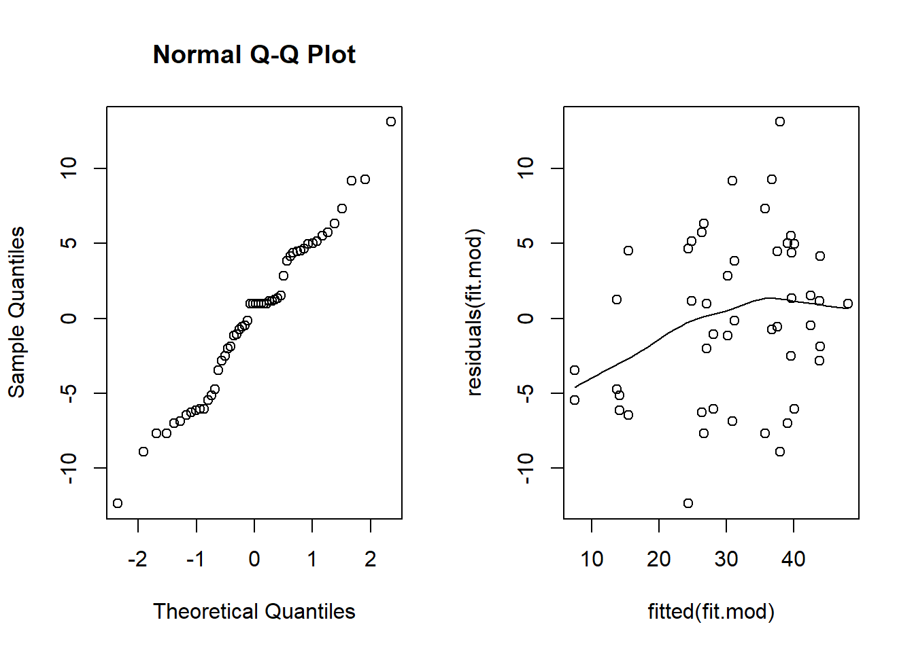
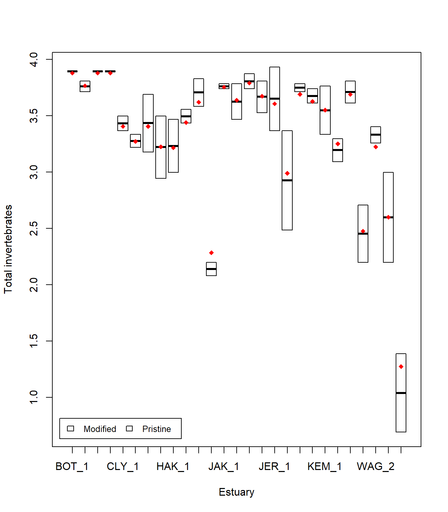

library(lme4)Factores Cruzados y Anidados
Mixed models 1 es una introducción a los modelos mixtos con un factor aleatorio. Después de leer eso, si crees que tienes más de un factor aleatorio, continúa leyendo. Por ejemplo, es posible que tengas factores cruzados o anidados.
Muchos diseños experimentales en ecología y ciencias ambientales requieren modelos mixtos con varios efectos aleatorios (factores). Es posible que hayas oído hablar de factores anidados y cruzados. A menudo definimos estos como diseños bastante distintos (por ejemplo, de www.theanalysisfactor.com)
Dos factores están cruzados cuando cada categoría (nivel) de un factor coocurre en el diseño con cada categoría del otro factor. En otras palabras, hay al menos una observación en cada combinación de categorías para los dos factores.
Un factor está anidado dentro de otro factor cuando cada categoría del primer factor coocurre con solo una categoría del otro. En otras palabras, una observación debe estar dentro de una categoría del Factor 2 para tener una categoría específica del Factor 1. No se representan todas las combinaciones de categorías.
También existen diseños intermedios que están parcialmente cruzados, donde algunos niveles de un factor ocurren en varios (pero no todos) los niveles del segundo factor. Estos diseños a menudo se han enseñado como problemas separados con diferentes formas de llevar a cabo análisis de varianza (ANOVA) dependiendo de si tienes factores cruzados o anidados. Usando modelos mixtos con el paquete lme4, podemos pensar en todos estos en un marco de trabajo, donde los diseños anidados y cruzados se modelan de la misma manera. Pensar en los factores como cruzados o anidados se simplifica mediante una identificación cuidadosa de los niveles del factor, pero hablaremos más sobre esto más adelante.
Ejecutando el análisis
Utilizaremos el paquete lme4 para todos nuestros modelos de efectos mixtos. Nos permitirá modelar datos continuos y discretos con uno o más efectos aleatorios. Primero, carga el paquete:
Analizaremos un conjunto de datos que tiene como objetivo probar el efecto de la contaminación del agua en la abundancia de algunos invertebrados marinos submareales mediante la comparación de muestras de estuarios modificados y prístinos. Dado que los recuentos totales son grandes, asumiremos que los datos son continuos. Más adelante, en Modelos mixtos 3, modelaremos los recuentos como discretos utilizando modelos lineales mixtos generalizados (GLMMs).

Descarga el conjunto de datos de muestra, Estuaries.csv, y cárgalo en R.
Estuaries <- read.csv("Estuaries.csv", header = T)Ajuste de un modelo con un efecto fijo y varios efectos aleatorios
En este conjunto de datos, tenemos un efecto fijo (Modificación; modificado vs. prístino) y dos efectos aleatorios (Estuario y Sitio). El Sitio está anidado dentro del Estuario, ya que cada sitio solo puede pertenecer a un estuario. Sin embargo, al ingresar los datos, hemos sido descuidados y numerado los sitios dentro de cada estuario como 1, 2, 3, etc.
Podemos ver esto al observar los datos y una tabla cruzada.
Estuaries[1:10, ] X Modification Estuary Site Hydroid Total Schizoporella.errata
1 1 Modified JAK 1 0 44 15
2 2 Modified JAK 1 0 42 8
3 3 Modified JAK 2 0 32 9
4 4 Modified JAK 2 0 44 14
5 5 Modified JAK 3 1 42 6
6 6 Modified JAK 3 1 48 12
7 7 Modified JAK 4 0 45 28
8 8 Modified JAK 4 0 34 1
9 9 Pristine JER 1 7 29 0
10 10 Pristine JER 1 5 51 0xtabs(~ Estuary + Site, Estuaries, sparse = TRUE)7 x 4 sparse Matrix of class "dgCMatrix"
Site
Estuary 1 2 3 4
BOT 2 2 2 2
CLY 2 2 2 2
HAK 2 2 2 2
JAK 2 2 2 2
JER 2 2 2 2
KEM 2 2 . 2
WAG 2 2 2 2Los estuarios JAK y JER tienen sitios numerados como 1, aunque estos sitios no están conectados de ninguna manera. También podemos ver esto en la tabla cruzada xtabs. Esta etiqueta de sitios parece estar cruzada, donde cada sitio ocurre en cada estuario, en lugar de estar anidado.
Podemos solucionar esto simplemente indicando a R que el Sitio está anidado en el Estuario. Sin embargo, es mejor práctica hacer esto en la etapa de entrada de datos. Si las cosas son iguales, deben etiquetarse de la misma manera, y si no lo son, deben etiquetarse de manera diferente.
Para crear una etiqueta única para cada sitio en este conjunto de datos, convertimos el Sitio en un factor (era un número entero) y creamos una nueva variable (SiteWithin) que es la combinación de Estuario y Sitio.
Estuaries$Site <- as.factor(Estuaries$Site)
Estuaries$SiteWithin <- paste0(Estuaries$Estuary, "_", Estuaries$Site)Ahora, verifica la estructura para asegurarte de que cada sitio esté anidado en un solo estuario, de acuerdo con el diseño experimental.
xtabs(~ Estuary + SiteWithin, Estuaries, sparse = TRUE)7 x 27 sparse Matrix of class "dgCMatrix" [[ suppressing 27 column names 'BOT_1', 'BOT_2', 'BOT_3' ... ]] SiteWithin
Estuary
BOT 2 2 2 2 . . . . . . . . . . . . . . . . . . . . . . .
CLY . . . . 2 2 2 2 . . . . . . . . . . . . . . . . . . .
HAK . . . . . . . . 2 2 2 2 . . . . . . . . . . . . . . .
JAK . . . . . . . . . . . . 2 2 2 2 . . . . . . . . . . .
JER . . . . . . . . . . . . . . . . 2 2 2 2 . . . . . . .
KEM . . . . . . . . . . . . . . . . . . . . 2 2 2 . . . .
WAG . . . . . . . . . . . . . . . . . . . . . . . 2 2 2 2Para ajustar un modelo para la abundancia total, utilizaríamos:
fit.mod <- lmer(Total ~ Modification + (1 | Estuary) + (1 | SiteWithin), data = Estuaries)
summary(fit.mod)Linear mixed model fit by REML ['lmerMod']
Formula: Total ~ Modification + (1 | Estuary) + (1 | SiteWithin)
Data: Estuaries
REML criterion at convergence: 386.6
Scaled residuals:
Min 1Q Median 3Q Max
-1.8686 -0.6687 0.1504 0.6505 1.9816
Random effects:
Groups Name Variance Std.Dev.
SiteWithin (Intercept) 49.85 7.061
Estuary (Intercept) 47.59 6.899
Residual 43.65 6.607
Number of obs: 54, groups: SiteWithin, 27; Estuary, 7
Fixed effects:
Estimate Std. Error t value
(Intercept) 41.053 4.739 8.662
ModificationPristine -14.553 6.232 -2.335
Correlation of Fixed Effects:
(Intr)
MdfctnPrstn -0.760donde Total es la variable dependiente (a la izquierda de ~), Modification es el efecto fijo, Estuary y SiteWithin son los efectos aleatorios.
También ajustaremos el modelo incorrecto para ver la diferencia si hubiéramos utilizado las etiquetas antiguas para cada sitio.
fit.wrong <- lmer(Total ~ Modification + (1 | Estuary) + (1 | Site), data = Estuaries)
summary(fit.wrong)Linear mixed model fit by REML ['lmerMod']
Formula: Total ~ Modification + (1 | Estuary) + (1 | Site)
Data: Estuaries
REML criterion at convergence: 393.6
Scaled residuals:
Min 1Q Median 3Q Max
-2.3312 -0.7631 0.1040 0.5766 1.8202
Random effects:
Groups Name Variance Std.Dev.
Estuary (Intercept) 53.613 7.322
Site (Intercept) 7.686 2.772
Residual 80.045 8.947
Number of obs: 54, groups: Estuary, 7; Site, 4
Fixed effects:
Estimate Std. Error t value
(Intercept) 41.257 4.849 8.508
ModificationPristine -14.757 6.124 -2.410
Correlation of Fixed Effects:
(Intr)
MdfctnPrstn -0.727El único lugar donde podemos ver una diferencia obvia es en la tabla de efectos aleatorios. Para el modelo correcto tenemos Número de obs: 52, grupos: SiteWithin, 26; Estuary, 7, mientras que el modelo incorrecto nos indica que solo tenemos 4 sitios, lo cual sabemos que es incorrecto.
Nota: fit.wrong sería correcto si tuviéramos factores cruzados.
Verificación de supuestos
Los supuestos son los mismos que para un factor aleatorio, pero no está de más listarlos nuevamente:
- Las observaciones \(y\) son independientes, condicionales a algunos predictores \(x\).
- La respuesta \(y\) sigue una distribución normal condicional a algunos predictores \(x\).
- La respuesta \(y\) tiene una varianza constante, condicional a algunos predictores \(x\).
- Existe una relación lineal entre \(y\) y los predictores \(x\) y los efectos aleatorios \(z\).
- Los efectos aleatorios \(z\) son independientes de \(y\).
- Los efectos aleatorios \(z\) siguen una distribución normal.
Consulta Modelos mixtos 1 para obtener orientación detallada sobre los supuestos en modelos mixtos lineales. En resumen, no se pueden verificar los supuestos 1 y 5, pero se pueden garantizar mediante la toma de muestras aleatorias, y el supuesto 6 no es crucial y es difícil de verificar. Para verificar el supuesto 2, buscamos una relación lineal en el gráfico cuantil-normal. Para verificar los supuestos 3 y 4, buscamos una forma de abanico y una forma de U en el gráfico de residuos vs valores ajustados.
par(mfrow = c(1, 2))
qqnorm(residuals(fit.mod))
scatter.smooth(residuals(fit.mod) ~ fitted(fit.mod)) # residual plot
El gráfico de cuantiles normales parece razonable, sin embargo, aquí podemos observar claramente una forma de abanico en el gráfico de residuos vs. valores ajuste. Intentemos transformar la variable de respuesta y veamos si obtenemos mejores resultados.
fit.mod <- lmer(log(Total) ~ Modification + (1 | Estuary) + (1 | SiteWithin), data = Estuaries)
par(mfrow = c(1, 2))
qqnorm(residuals(fit.mod))
scatter.smooth(residuals(fit.mod) ~ fitted(fit.mod)) # residual plot
Este diagrama de dispersión es mucho mejor, la forma de abanico prácticamente ha desaparecido. La línea suave está por debajo de cero en la parte izquierda, pero hay relativamente pocos puntos allí, por lo que no es de gran preocupación.
Interpretación de los resultados
Prueba de hipótesis para el efecto fijo
Podemos utilizar anova como antes para obtener p-valores aproximados para los efectos fijos.
ft.mod <- lmer(log(Total) ~ Modification + (1 | Estuary) + (1 | SiteWithin), data = Estuaries, REML = F)
ft.mod.0 <- lmer(log(Total) ~ (1 | Estuary) + (1 | SiteWithin), data = Estuaries, REML = F)
anova(ft.mod.0, ft.mod)Data: Estuaries
Models:
ft.mod.0: log(Total) ~ (1 | Estuary) + (1 | SiteWithin)
ft.mod: log(Total) ~ Modification + (1 | Estuary) + (1 | SiteWithin)
npar AIC BIC logLik deviance Chisq Df Pr(>Chisq)
ft.mod.0 4 79.223 87.179 -35.611 71.223
ft.mod 5 77.397 87.342 -33.698 67.397 3.8258 1 0.05047 .
---
Signif. codes: 0 '***' 0.001 '**' 0.01 '*' 0.05 '.' 0.1 ' ' 1Encontramos una evidencia débil de un efecto de Modificación (p=0.05047).
Prueba de hipótesis para los efectos aleatorios
Como en Modelos mixtos 1, utilizaremos un bootstrap paramétrico. Probaremos si necesitamos tener un efecto aleatorio para el Sitio, dado que ya tenemos un efecto aleatorio para el Estuario en el modelo. Tomamos el código de Modelos mixtos 1 y cambiado las partes relevantes, puedes comparar los dos para tener una idea de cómo escribir tu propio código de bootstrap paramétrico.
nBoot <- 1000
lrStat <- rep(NA, nBoot)
ft.null <- lmer(log(Total) ~ Modification + (1 | Estuary), Estuaries, REML = F) # modelo nulo
ft.alt <- lmer(log(Total) ~ Modification + (1 | Estuary) + (1 | SiteWithin), Estuaries, REML = F) # modelo alterno
lrObs <- 2 * logLik(ft.alt) - 2 * logLik(ft.null) #
for (iBoot in 1:nBoot)
{
Estuaries$logTotalSim <- unlist(simulate(ft.null)) #
bNull <- lmer(logTotalSim ~ Modification + (1 | Estuary), Estuaries, REML = F) # modelo nulo
bAlt <- lmer(logTotalSim ~ Modification + (1 | Estuary) + (1 | SiteWithin), Estuaries, REML = F) # modelo alterno
lrStat[iBoot] <- 2 * logLik(bAlt) - 2 * logLik(bNull) #
}
mean(lrStat > lrObs) # p-value[1] 0El p-valor es 0, muy pequeño. Tenemos una fuerte evidencia de un efecto del Sitio y debemos mantenerlo en el modelo.
Comunicación de los resultados
Escrito. Los resultados de los modelos mixtos lineales se comunican de manera similar a los resultados de los modelos lineales. En la sección de resultados, debes mencionar que estás utilizando modelos mixtos con el paquete R lme4, y listar tus efectos aleatorios y fijos. También debes mencionar cómo realizaste la inferencia, es decir, pruebas de razón de verosimilitud (utilizando la función anova) o bootstrap paramétrico. En la sección de resultados para un predictor, basta con escribir una línea, por ejemplo: “Hay una fuerte evidencia (p < 0.001) de un efecto negativo de la modificación en la abundancia total”. Para múltiples predictores, es mejor mostrar los resultados en una tabla.
Visual. La mejor manera de comunicar visualmente los resultados dependerá de tu pregunta. Para un modelo mixto simple con un efecto aleatorio, una gráfica de los datos crudos con las medias del modelo superpuestas es una posibilidad. Se requiere un poco de código para esta gráfica, y será un poco diferente para tus datos y modelo.
Puedes hacer gráficas dentro de cada sitio, pero esto es un poco extraño para un diagrama de caja, ya que solo hay dos observaciones por sitio. Puedes hacer esto para tus datos si tienes más observaciones dentro de cada Sitio.
library(Hmisc)
Attaching package: 'Hmisc'The following objects are masked from 'package:base':
format.pval, unitsModEst <- unique(Estuaries[c("SiteWithin", "Modification")]) # find which Estuaries are modified
cols <- as.numeric(ModEst[order(ModEst[, 1]), 2]) + 3 # Assign colour by modification
boxplot(log(Total) ~ SiteWithin, data = Estuaries, col = cols, xlab = "Estuary", ylab = "Total invertebrates")
legend("bottomleft",
inset = .02,
c(" Modified ", " Pristine "), fill = unique(cols), horiz = TRUE, cex = 0.8
)
means <- fitted(fit.mod) # this will give the estimate at each data point
Est.means <- summarize(means, Estuaries$SiteWithin, mean)$means # extract means by site
stripchart(Est.means ~ sort(unique(SiteWithin)), data = Estuaries, pch = 18, col = "red", vertical = TRUE, add = TRUE) # plot means by site
Alternativamente, puedes hacer gráficas por Estuario (ver Modelos mixtos 1).
Más ayuda
Puedes escribir ?lmer en R para obtener ayuda con estas funciones.
Borrador de capítulo de libro de los autores de lme4.
Faraway, JJ (2005) Extending the linear model with R: generalized linear, mixed effects and nonparametric regression models. CRC Press.
Zuur, A, EN Ieno and GM Smith (2007) Analysing ecological data. Springer Science & Business Media.
Autor: Gordana Popovic
Año: 2016
Última actualización: Nov. 2023